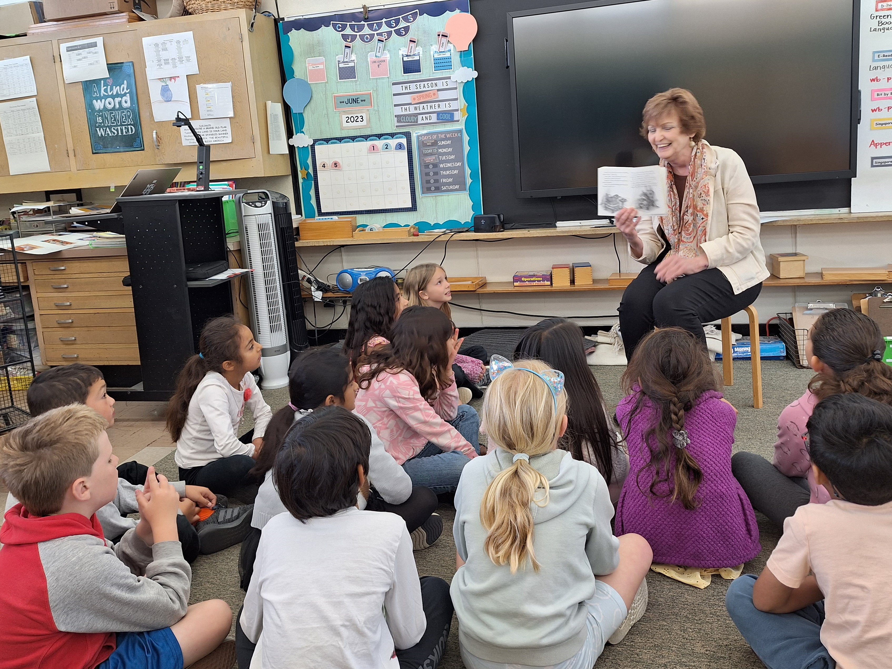
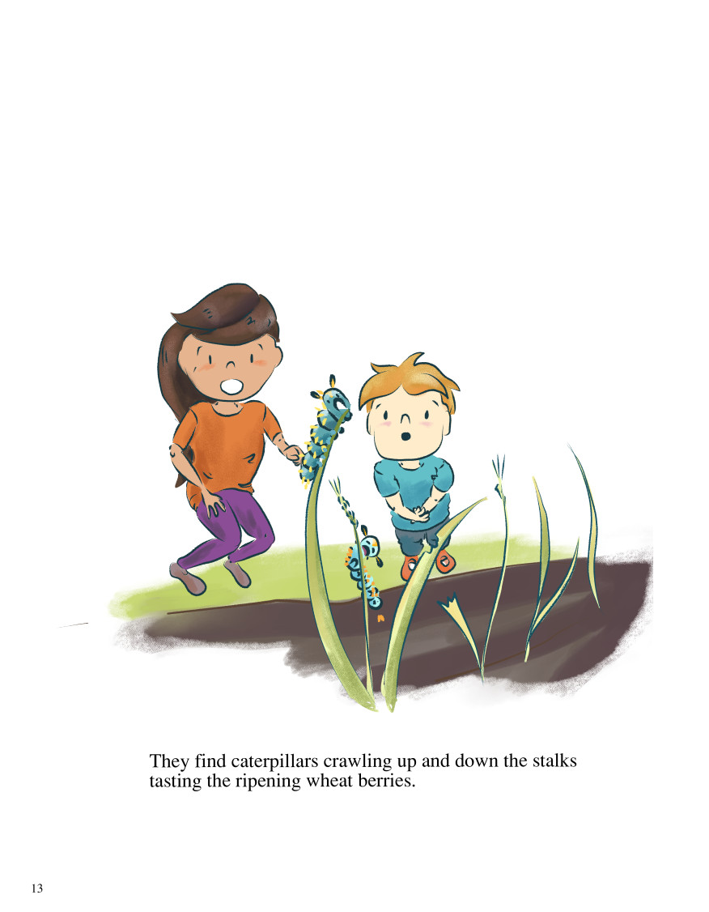

<!DOCTYPE html>
<!-- inclass.html 9/8/2023 -->
<html lang="en">
	<meta charset="utf-8">
	<title>In class ...</title>
	<link href="https://fonts.cdnfonts.com/css/skrawk-serif" rel="stylesheet">
	<style>
		body {
			font-family: "Skrawk Serif", sans-serif;
			background-color: AntiqueWhite;
			text-align:center;
		}
		p {
			width:65%;
			font-size:16pt;
			text-align: left;
			margin:auto;
		}
		blockquote {
			font-style: italic;
		}
		figcaption {
			font-size:16pt;
			font-style:italic;
		}
		
	</style>
</html>
<body>
<center></center> 
	<br>
	<br>
	<p>Here is Mary Anne doing what she loves best -- reading to children ("A Nest for Celeste" by Henry Cole)!
	<br>
	<br>
	<p>To see the sparkle in their eyes, smiles on their faces, and curiosity peaked brings joy to her heart!
	<br>
	<br>
	<div border-width:4px>
	<center></center>
<center>
<div id="art">
	<h1>ART IN CLASS</h1>
	<ul>
	<li>Exhibit a page for the kid's to color . . . 
	<br>
	<li>Click on these links for ideas:
	<br>
	<li><a href="https://helloartsy.com/how-to-draw-cute-butterfly/">Steps to drawing a butterfly</a>
	<br>
	<li><a href="https://iheartcraftythings.com/caterpillar-craft.html">Caterpillar art</a>
	<br>
	<li><a href="https://artprojectsforkids.org/van-gogh-wheat-field-crows/">Learn about Van Gogh and his painting of wheat fields</a>
	<br>
	<li><a href="https://krokotak.com/2019/08/wheat-kids-craft/">Wheat Kids Craft</a>
	<br><br>More to follow . . .<br>
</div>
</body>
